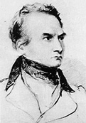
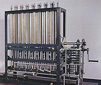

Charles Babbage entwickelt mit der "Difference Engine" und der "Analytical Engine" zwei mechanische Rechenmaschinen, die er zu Lebzeiten wegen Geldmangels nicht vollenden kann. Letztere gilt als Vorläufer des moderen Computers. Seine Analyse "Economy of machinery and manufactures" des Fabrikkapitalismus wird eine wichtige Quelle für Karl Marx. Babbage stellt das Lebensversicherungs-Wesen auf eine mathematische Grundlage, beschäftigt sich theoretisch mit Unterwasserfahrzeugen und deren Navigation und stellt eine Theorie zur Gletscherbildung auf.